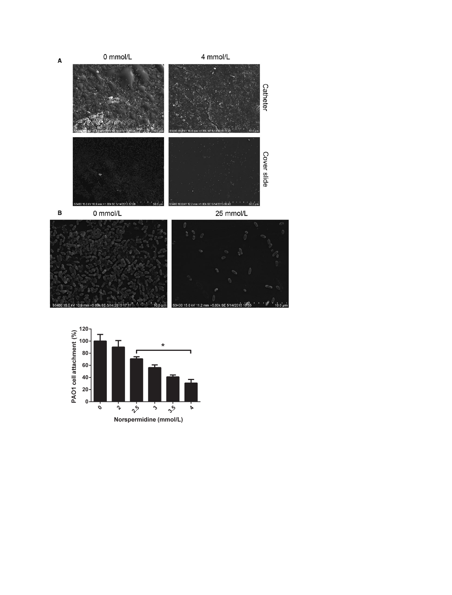

Effects of Norspermidine on P. aeruginosa Biofilm
L. Qu et al.
Figure 3. SEM examination for eradication of
PAO1 mature biofilm by norspermidine. The
24 h mature biofilms on (A) catheter and
cover slide were cultured with (4 mmol/L) or
without norspermidine for another 24 h,
then fixed and examined by SEM. (B)
Norspermidine reduced the biofilm biomass
and changed its morphology.
Figure 4. Attachment of PAO1 cells to the surfaces of microtiter plate
wells containing norspermidine. Experiment is representative of three
independent tests. *P < 0.05 versus untreated control, and error bars
indicate SD.
Inhibitory effect of norspermidine on QS
system
To assess the effect of norspermidine on the gene expres-
sion of QS-related genes, PAO1 was cultured in the pres-
ence of 4 mmol/L norspermidine and the gene expression
was evaluated by real-time PCR (Fig. 6A). The expression
of lasR, lasI, rhlR, rhlI, and mvfR, which are related to QS
system, was significantly decreased by norspermidine treat-
ment at the concentration of 4 mmol/L. For better fold-
change comprehension, the traditional 2−ΔΔCT value was
calculated (Kim et al. 2015a,b). The gene expression analysis
indicates that the norspermidine inhibit biofilm formation
by downregulating the expression level of QS-related genes.
At the same time, three QS-related virulence factors
(pyocyanin, elastase activity, and protease activity) were
analyzed to assess the effects of norspermidine on viru-
lence. Production of the three virulence factors was reduced
by norspermidine in a concentration-dependent manner
(0, 2, and 4 mmol/L norspermidine added): 45–54% sup-
pression for pyocyanin, 59–69% suppression for elastase
activity, and 53–66% suppression for protease activity
(Fig. 6B–D).
Discussion
In this work, we demonstrated the antimicrobial and an-
tibiofilm effects of exogenous norspermidine against P. aer-
uginosa. The effects of norspermidine on our P. aeruginosa
strains was similar to that reported by V. cholerae, Neisseria
408
© 2016 The Authors. MicrobiologyOpen published by John Wiley & Sons Ltd.